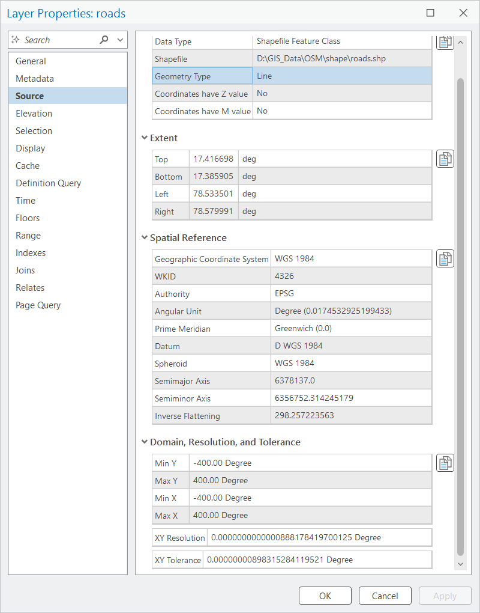
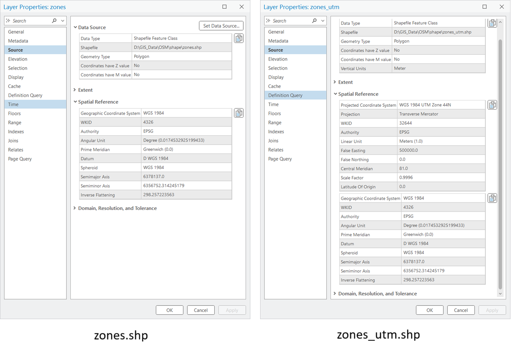

In this chapter, you’ll learn how to work with vector data (shapefiles and feature classes) using ArcPy. We’ll cover how to list datasets, inspect properties, work with geometry objects, and manage spatial references.
ArcPy lists spatial datasets using ListFeatureClasses(), which requires a workspace set via arcpy.env.workspace.
Code
import arcpy# Set the workspace where your data residesarcpy.env.workspace =r"D:/GIS_Data/OSM/shape"# List all feature classesfeature_classes = arcpy.ListFeatureClasses()print("Available feature classes:")for fc in feature_classes:print("-", fc)
You can also filter by geometry type using the feature_type argument.
Code
# List only polyline (line) feature classesline_classes = arcpy.ListFeatureClasses(feature_type="Polyline")print("Available line feature classes:")for fc in line_classes:print("-", fc)
Available line feature classes:
- railways.shp
- roads.shp
- roads_utm44n.shp
- waterways.shp
7.2 Describe Dataset Properties
Use arcpy.Describe() to review dataset metadata like shape type, spatial reference, and file path.
Code
# Set the workspace where your data residesarcpy.env.workspace =r"D:/GIS_Data/OSM/shape"desc = arcpy.Describe("roads.shp")print("Name:", desc.name)print("Shape Type:", desc.shapeType)print("Spatial Reference:", desc.spatialReference.name)print("Path:", desc.catalogPath)
desc.featureType → type of dataset (e.g., Simple, Annotation)
desc.hasZ, desc.hasM → whether Z (elevation) or M (measure) values are present

Layer Properties
7.3 Accessing Geometry Objects
You can access feature geometry (points, lines, polygons) with a SearchCursor. Geometry objects provide methods and properties for spatial calculations.
Code
import arcpy# Set the workspace where your data residesarcpy.env.workspace =r"D:/GIS_Data/OSM/shape"fc ="zones.shp"with arcpy.da.SearchCursor(fc, ["SHAPE@"]) as cursor:for row in cursor: geom = row[0]print("Geometry type:", geom.type)print("Area:", geom.area)print("Length:", geom.length)print("Centroid:", geom.centroid.X, geom.centroid.Y)break# show only first feature
Features can consist of multiple parts (e.g., islands in a polygon, disconnected line segments).
You can loop through parts and vertices:
Code
# Set the workspace where your data residesarcpy.env.workspace =r"D:/GIS_Data/OSM/shape"fc ="zones.shp"with arcpy.da.SearchCursor(fc, ["SHAPE@"]) as cursor:for row in cursor: geom = row[0]for part in geom: # each part = list of pointsfor pnt in part:if pnt: # skip None (part breaks)print(f"X: {pnt.X}, Y: {pnt.Y}")break# first feature only
Spatial references define the coordinate system and projection of a dataset.
ArcPy allows you to check, define, and project spatial references.
7.5.1 Check Spatial Reference
Code
import arcpy# Set the workspace where your data residesarcpy.env.workspace =r"D:/GIS_Data/OSM/shape"fc ="roads.shp"sr = arcpy.Describe(fc).spatialReferenceprint("Spatial Reference Name:", sr.name)print("Is Projected?", sr.type=="Projected")print("Coordinate System Factory Code (WKID):", sr.factoryCode)
Spatial Reference Name: GCS_WGS_1984
Is Projected? False
Coordinate System Factory Code (WKID): 4326
Spatial Reference
7.5.2 Define Projection (if missing)
If a dataset has no defined spatial reference (Unknown), you can assign one using DefineProjection_management.
Code
# Set the workspace where your data residesarcpy.env.workspace =r"D:/GIS_Data/OSM/shape"# Example: Assign WGS 1984 (EPSG:4326) to a shapefilefc ="waterways.shp"sr = arcpy.SpatialReference(4326)arcpy.management.DefineProjection(fc, sr)print("Projection defined successfully.")
Projection defined successfully.
Important: Defining projection only assigns metadata. It does not change the actual coordinate values.
7.5.3 Project Data (change coordinate system)
To convert data into another coordinate system, use Project_management.
Code
# Example: Project a shapefile from WGS84 to UTM Zone 44N# Set the workspace where your data residesarcpy.env.workspace =r"D:/GIS_Data/OSM/shape"arcpy.env.overwriteOutput =Truein_fc ="zones.shp"out_fc ="zones_utm.shp"out_sr = arcpy.SpatialReference(32644) # EPSG code for WGS 84 / UTM Zone 44Narcpy.management.Project(in_fc, out_fc, out_sr)print("Projection transformation completed.")
Projection transformation completed.

Project
Batch Reprojection
To reproject all datasets into a common coordinate system ensures spatial operations and measurements are consistent and prevents errors from mixing projections.
Notes
Run this inside the ArcGIS Pro Python environment (ArcPy must be available).
Test on a small subset of data first and keep backups.
Update in_workspace, out_folder, and target_wkid before running.
Code
# Example: Project all vector datasets into a target coordinate system (batch)import arcpyimport os# ---------- User settings ----------# Input workspace containing your datasets (folder with .shp or a file geodatabase path)# If using a file geodatabase as input, set in_workspace to that geodatabase path (the script will list FCs).in_workspace =r"D:\GIS_Data\OSM\shape"# Output folder where reprojection shapefiles will be writtenout_folder =r"D:\GIS_Data\OSM\reprojected_shp"# Target spatial reference (use EPSG/WKID). Example: UTM Zone 44N WGS84 -> 32644target_wkid =32644# -----------------------------------# Set environment and allow overwritearcpy.env.workspace = in_workspacearcpy.env.overwriteOutput =True# Create output folder if it does not existos.makedirs(out_folder, exist_ok=True)# Create target SpatialReference objecttarget_sr = arcpy.SpatialReference(target_wkid)def safe_shapefile_name(name):""" Build a safe shapefile name from input dataset name. - Removes .shp if present, appends suffix, and enforces .shp extension. - For shapefiles, base = filename without extension. - For feature classes inside a geodatabase, base = feature class name. - Keeps name length reasonable (shapefile filename limit ~ 254 but DBF field limits can affect). """ base = os.path.splitext(os.path.basename(name))[0] suffix =f"_wk{target_wkid}" out_name =f"{base}{suffix}.shp"# Optional: further sanitize to remove invalid characters out_name = out_name.replace(" ", "_")return out_name# List feature classes in the input workspace (works for folder with .shp or a .gdb)fcs = arcpy.ListFeatureClasses()# If the workspace is a file geodatabase, ListFeatureClasses finds FCs in the root of gdb.# If you need to recurse through datasets/feature datasets, use arcpy.ListDatasets + change workspace or arcpy.da.Walk.ifnot fcs:print("No feature classes found in workspace.")else:print(f"Found {len(fcs)} feature class(es). Beginning projection...")for fc in fcs:try: desc = arcpy.Describe(fc) in_sr = desc.spatialReference in_name = desc.name # name of the dataset (with extension for shapefiles)print("\nProcessing:", in_name)print(" - Input spatial reference:", in_sr.name if in_sr else"Unknown")# Check whether input already uses the target spatial reference (optional skip) same_sr =Falsetry:ifgetattr(in_sr, "factoryCode", None) andgetattr(target_sr, "factoryCode", None): same_sr = (int(in_sr.factoryCode) ==int(target_sr.factoryCode))else: same_sr = (in_sr.name == target_sr.name)exceptException: same_sr =Falseif same_sr:print(" - Skipping: dataset already in target spatial reference.")continue# Build shapefile output path out_name = safe_shapefile_name(in_name) out_path = os.path.join(out_folder, out_name)print(" - Output path:", out_path)# If output already exists and overwriteOutput is True, it will be overwritten.# Project_management expects: in_dataset, out_dataset, out_coor_system arcpy.management.Project(fc, out_path, target_sr)print(" - Projection complete:", out_path)except arcpy.ExecuteError:# ArcPy-specific error (tool failed), print tool messagesprint("ArcPy error while processing", fc)print(arcpy.GetMessages(2))exceptExceptionas e:# Any other Python errorprint("Unexpected error while processing", fc, ":", str(e))print("\nBatch projection finished.")